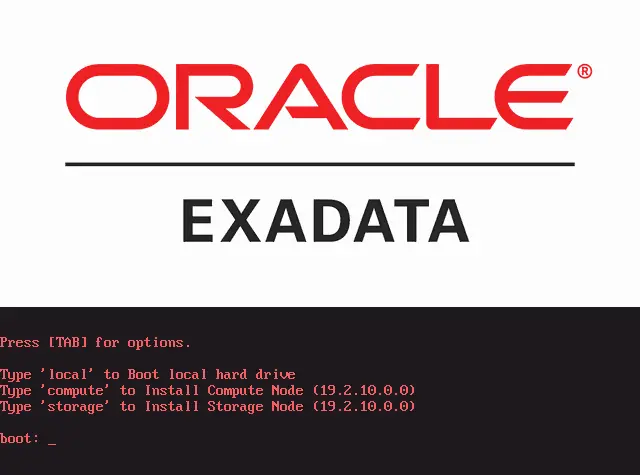

Exadata PXE ReImage
Attention
Это устаревший способ. Удобнее и быстрее использовать NFS Server. Смотрите статью Exadata NFS ReImage
Note
Exadata X2-X6 - BIOS-Based System
Exadata X7-X8 - UEFI-Based System
Note
- Для проведения re-image нам потребуется:
Профиль OEDA, приготовленный в Linux
Сервер с Linux
HTTP Server
DHCP Server
TFTP Server
Этап I. Подготовка профиля
Для того чтобы перезалить экзадату нужно подготовить install-сервер, а так же профиль. Профиль готовится в OEDA (Oracle Exadata Deployment Assistant), скачать можно на support.oracle.com. После посторения профиля нам понадобится только файл “customer-exa-preconf… .csv”. Его нужно будет переименовать в preconf.csv, он понадобится нам позже.
Этап II. Скачивание дистрибутивов
Смотрим требования к версии image в ТЗ, после чего смотрим документ Doc ID 888828.1 на сайте support.oracle.com. В этом документе находим нужную нам версию image и в правом столбце жмем ссылку напротив нужного нам релиза (Supplemental README …). В открывшемся README нужно найти секцию ‘Software and Image files’ в которой описаны все необходимые файлы которые понадобятся для скачивания.

Теперь идем на сайт edelivery.oracle.com и в строке поиска набираем ‘Oracle Exadata Storage Server’, после чего кликаем на нужную нам версию. В верхнем правом углу нажимаем ‘Checkout’ и ‘Continue’, после чего соглашаемся с лицензией и снова ‘Continue’. Проверяем что нам предлагают скачивать те же файлы что мы видели ранее. Скачиваем.

После того как оба файла скачали - распаковываем.
Этап III. Настройка сервера инсталляции
На этом этапе мы готовим install-сервер на базе Oracle Enterprise Linux 7.7
Установка необходимых пакетов
У вас должен быть подключен репозиторий из интернета, либо используйте репозиторий CD-ROM
yum install dhcp tftp-server syslinux nfs-utils rpcbind httpd.x86_64 telnet vim xinetd
Отключение firewall
systemctl stop firewalld
systemctl disable firewalld
systemctl mask --now firewalld
Отключаем SELinux
Для этого в файле /etc/selinux/config изменяем директиву SELINUX=enforcing на SELINUX=disabled, после чего перезагружаемся.
Настройка NFS сервера
systemctl enable nfs-server
systemctl enable rpcbind
mkdir -p /tftpboot/linux-install/pxelinux.cfg/
echo "/tftpboot/linux-install *(ro,sync,no_root_squash)" >> /etc/exports
echo "/var/www/html/x86_64/19.3.6 *(ro,sync,no_root_squash)" >> /etc/exports
systemctl restart rpcbind
systemctl restart nfs-server
systemctl status nfs
showmount -e
rpcinfo -p
Tip
NFS debug enable: rpcdebug -m nfsd all
NFS debug disable: rpcdebug -m nfsd -c all
Настройка TFTP сервера
Редактируем конфиг /etc/xinetd.d/tftp.
Изменяем ‘disable’ на ‘no’.
Изменяем ‘server_args’ на
-s /tftpboot --verboseдля логирования в /var/log/messages.
systemctl enable tftp.service
systemctl enable xinetd.service
systemctl restart tftp.service
systemctl restart xinetd.service
systemctl status xinetd.service
systemctl status tftp.service
Настройка web-сервера Apache
Домашний каталог web-сервера по-умолчанию /var/www/html/. В этот каталог мы копируем ISO образы ОС и файлы MD5.
mkdir -p /var/www/html/x86_64/iso/
cp V994561-01/compute_19.2.11.0.0_LINUX.X64_200224-1.x86_64.iso /var/www/html/x86_64/iso/
cp V994561-01/compute_19.2.11.0.0_LINUX.X64_200224-1.x86_64.iso.md5 /var/www/html/x86_64/iso/
cp V994562-01/cell_19.2.11.0.0_LINUX.X64_200224-1.x86_64.iso /var/www/html/x86_64/iso/
cp V994562-01/cell_19.2.11.0.0_LINUX.X64_200224-1.x86_64.iso.md5 /var/www/html/x86_64/iso/
systemctl enable httpd
systemctl restart httpd
systemctl status httpd
Настройка PXE сервера
mkdir -p /tftpboot/linux-install/pxelinux.cfg
cp /usr/share/syslinux/pxelinux.0 /tftpboot/linux-install/
cp /usr/share/syslinux/menu.c32 /tftpboot/linux-install/
cp V994561-01/initrd-iso-19.2.11.0.0-200224-compute.img /tftpboot/linux-install/
cp V994561-01/vmlinux-iso-19.2.11.0.0-200224-compute /tftpboot/linux-install/
cp V994562-01/initrd-iso-19.2.11.0.0-200224-cell.img /tftpboot/linux-install/
cp V994562-01/vmlinux-iso-19.2.11.0.0-200224-cell /tftpboot/linux-install/
Внутри каталога /tftpboot/linux-install/pxelinux.cfg создаем файл ‘default’ со следующим содержимым
#UI menu.c32
PROMPT 1
TIMEOUT 600 # 60 seconds
DEFAULT local
ONTIMEOUT local
DISPLAY boot.msg
MENU TITLE Exadata ReImage Server
LABEL local
MENU LABEL ^1) Boot local HDD
LOCALBOOT 0
LABEL compute
MENU LABEL ^2) Install Compute Node 19.2.11.0.0
kernel vmlinux-iso-19.2.11.0.0-200224-compute
append initrd=initrd-iso-19.2.11.0.0-200224-compute.img pxe factory stit reboot-on-success notests=diskgroup dhcp preconf=10.152.240.95:/tftpboot/linux-install/preconf.csv iso-uri=http://10.152.240.95/x86_64/iso/compute_19.2.11.0.0_LINUX.X64_200224-1.x86_64.iso console=ttyS0,115200n8
LABEL storage
MENU LABEL ^3) Install Cell Node 19.2.11.0.0
kernel vmlinux-iso-19.2.11.0.0-200224-cell
append initrd=initrd-iso-19.2.11.0.0-200224-cell.img pxe factory stit reboot-on-success notests=diskgroup dhcp preconf=10.152.240.95:/tftpboot/linux-install/preconf.csv iso-uri=http://10.152.240.95/x86_64/iso/cell_19.2.11.0.0_LINUX.X64_200224-1.x86_64.iso console=ttyS0,115200n8
Note
В данном случае 10.152.240.95 это адрес install сервера, на котором лежат и образы ОС, и файл конфигурации. Если у вас UEFI-Based System, то вам нужно создавать другой файл - grub.cfg (см ссылки внизу статьи)
Настройка DHCP сервера
Создаем конфиг /etc/dhcp/dhcpd.conf. Для каждого хоста указываем его mac-адрес, иначе он не получит IP адрес
# ------------------------------------------------------------------------------
# - UEFI Part
# ------------------------------------------------------------------------------
set vendorclass = option vendor-class-identifier;
option pxe-system-type code 93 = unsigned integer 16;
set pxetype = option pxe-system-type;
# ------------------------------------------------------------------------------
option domain-name "example.com";
ddns-update-style interim;
deny unknown-clients;
not authoritative;
allow bootp;
allow booting;
option ip-forwarding false; # No IP forwarding
option mask-supplier false; # Don't respond to ICMP Mask req
subnet 10.152.240.0 netmask 255.255.252.0 {
option subnet-mask 255.255.252.0;
option routers 10.152.240.1; # Use real gateway or laptop IP
default-lease-time 14400;
max-lease-time 28800;
# ------------------------------------------------------------------------------
# - UEFI Part
# ------------------------------------------------------------------------------
if substring(vendorclass, 0, 9)="PXEClient" {
if pxetype=00:06 or pxetype=00:07 {
filename "linux-install/efi/shim.efi";
} else {
filename "linux-install/pxelinux.0";
}
}
# ------------------------------------------------------------------------------
}
group {
next-server 10.152.240.95;
option root-path "10.152.240.95:/tftpboot/linux-install";
host dbadm401 {
hardware ethernet 90:23:FC:DE:E9:4D;
fixed-address 10.152.240.81;
}
# ------------------------------------------------------------------------------
# .END FILE.
# ------------------------------------------------------------------------------
Перезапускаем DHCP Server
systemctl enable dhcpd.service
systemctl restart dhcpd.service
systemctl status dhcpd.service
Этап IV. Заполнение профиля
Чтобы инсталлятор мог использовать профиль его нужно дозаполнить.
Для этого нужно поочередно зайти на ILOM каждого сервера и выполнить команду show /SYS/MB/NET0 или /SYS/SMOD0/MB/NET0 или show /SYS/SMOD/MB/NET0 (зависит от можели серера) и ищем mac в строке fru_macaddress или командой ibhosts, если вдруг будете ставить через Infiniband.
После того как вы получили mac-адрес интерфейса, его необходимо вписать в файл preconf.csv. Сделать это нужно между запятыми, после слова “Management” и перед указанием IP-адреса для нужного сервера.
... bondeth0,eth0::::,Management,<mac:address:paste:here>,10.152.240.159,255.255.252.0 ...
После того как mac-адреса для всех серверов будут заполнны, файл необходимо положить рядом с iso-файлом. (например ‘/export/preconf.csv’)
Attention
Будьте внимательны со строками которые заполняете. Файл нельзя редактировать через EXCEL – используйте текстовый редактор.
Этап V. Инсталляция
Устанавливаем boot_device = PXE, и включаем сервер
-> cd /HOST/
-> set boot_device=pxe
-> start /SYS
-> start /SP/console
Внимательно следим за процессом загрузки, нужно убедиться что сервер получил верные сетевые настройки от DHCP-сервера. Когда сервер получит IP адрес и загрузит все необходимое по TFTP вы увидите менюшку.
{kind=link}
Для запуска инсталляции нужного сервера впишите “compute” или “storage” и нажмите Enter. Опять же внимательно смотрим и проверяем все ли корректно передалось серверу и тот ли preconf.csv будет применен. Если все верно, то дальше просто ждем. Сервер сам обновит все необходимые прошивки, если это требуется, и несколько раз может перезагружаться - следите за логами.
В конечном итоге запустится тест и после его прохождения сервер напишет о том что установка закончена.
2020-03-10 15:50:44 +0300 2020-03-10 15:50:44 +0300 [FACTORY_TEST_END] Post installation tests ended with success
2020-03-10 15:50:44 +0300 2020-03-10 15:50:44 +0300 [FACTORY_COMPLETE] Imaging ended with success
Со STORAGE-серверами у меня было так что последняя проверка проходила неудачно и тогда сервер писал вот так:
2020-03-10 15:34:50 +0300 The first boot completed with FAILURE
2020-03-10 15:34:50 +0300 2020-03-10 15:34:50 +0300 [FACTORY_ERROR] Overall status failure
2020-03-10 15:34:50 +0300 2020-03-10 15:34:50 +0300 [FACTORY_TEST_END] Post installation tests ended with failure
2020-03-10 15:34:50 +0300 2020-03-10 15:34:50 +0300 [FACTORY_COMPLETE] Imaging ended with failure
Перезагружаем сервер – shutdown -r now. После перезагрузки сервер через некоторое время еще раз запустит все необходимые проверки и напишет что все OK.
Run validation ipmisettings - PASSED
Run validation misceachboot - PASSED
Run validation celldstatus - PASSED
Run validation saveconfig - BACKGROUND RUN
2020-03-10 15:43:01 +0300 The each boot completed with SUCCESS
2020-03-10 15:43:01 +0300 Overall image status was failure. Switch it to success
Теперь проверяем что все настройки конфига применились верно и отдаем сервер специалистам Oracle для настройки кластера.
Возможные проблемы
В случае ошибки на NFS-client
[root@exadata ~]# showmount -e 10.2.12.5
clnt_create: RPC: Port mapper failure - Authentication error
Необходимо установить разрешение на стороне NFS-server, добавив в файл /etc/hosts.allow строки:
rpcbind : ALL
mountd : ALL
lockd : ALL
rquotad : ALL
statd : ALL
in.tftpd : ALL
Проверить разрешения можно при помощи команды:
[root@exadata ~]# tcpdmatch rpcbind 10.2.12.5
Related Links: